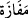

ifâde etmektedir.
Keşfü’l-esrâr’da şöyle der: “Bedenlerine eziyet, kalplerine de hüzün dokunmaz.” “ lâfzının kurtulma, “bâ”nın da ilişki ve yakınlık (mülâbese) için olması da
mümkündür. O zaman “Onlara hiçbir fenalık dokunmaz. Onlar mahzun da olmazlar.”
ifâdesi, onların kurtulmalarını tefsir ve beyân etmiş olur. Yâni onlar kendilerine mahsus
kurtuluş hâlinde oldukları halde Allah onları kurtarır. Yâni fenalık ve hüznü onlardan
uzaklaştırır. Ya da “bâ” harfi sebep bildirmek içindir. Yâni Allah onları kurtuluşları
olan takvâları sebebiyle kurtarır. Âyette kasdedilen dokunmanın ve hüznün devamlı
olmadığını ifâde etmek değil devamlı olarak bulunmadıklarını ifâde etmektir.
Âyette işâret vardır ki Allah ile O’nun dışındaki varlıklardan sakınanlara, O’ndan
kopma ve hicrân/terkedilmişlik azâbı dokunmaz. Onlar kaçırdıkları dünyâ ve âhiret
nimetleri için mahzun da olmazlar. Çünkü Mevlâ’nın yakınlığını kazanmışlardır ki bu
her tür başarının üstündedir. Muttakîler iki cihan mutluluğunu bugün korunarak, yarın
görerek; bugün gözetilerek, yarın kendilerine kâfi olunarak ve dostlukla kazanmışlardır.
Her tür noksanlıktan münezzeh olan Allah’tan bizi perdelenmeye götürecek şeylerden
korumasını ve her kapıda himayesine almasını niyaz ederiz.
Âyette takvâ teşvik edilmektedir. Çünkü o kurtuluş sebebidir. Onun sâyesinde
cehennem: “Geç ey mü’min, senin nûrun benim nârımı söndürdü.”[136] der. Yine takvâ
sâyesinde mahlûkât muttakîden korkar. Görmez misin ki Rum elçisi, mü’minlerin emîri
Hz. Ömer (r.a.)’ın huzuruna girince kendisini titreme ve korku almıştır.
Mesnevî’de der ki:
Bu Hakk’ın heybetidir, halktan değildir.
Bu, abalı adamın heybeti değildir.
Hak’tan korkan ve korunmayı seçen kişiden
İnsan, cin ve görenler korkar.
Bostân’da ise şöyle der:
Sen de Hakk’ın emrinden dışarı çıkma ki
Hiçbir şey de senin emrinden dışarı çıkmasın.
O seni dost bildikten sonra,
İmkânı yok, düşmanın elinde bırakmaz.
Vezirlerden birisi Zünnûn Mısrî’ye (r.h.) gelip sultandan çok korktuğunu söyleyerek
ondan himmet istedi. Zünnûn vezire: “Senin sultandan korktuğun kadar ben Allah’tan
korkmuş olsaydım sıddîklar zümresinden olurdum!” dedi.
Sa’dî, Gülistân’da der ki:
Olmasa rahatlık umudu ile ızdırap korkusu